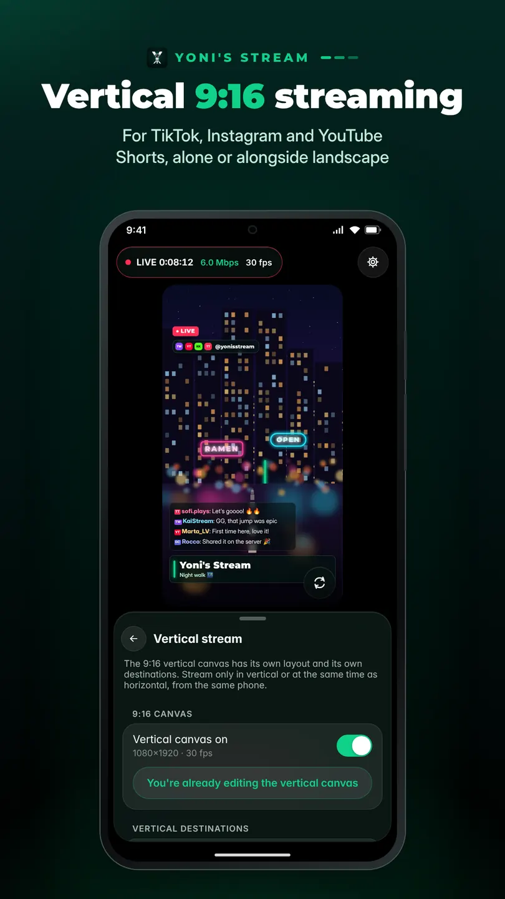

Yoni's StreamYoni's Stream превращает ваш Android в полноценную студию: сцены, слои, аудиомикшер, алерты и мультистрим без компьютера.
Листайте и выходите в эфир
СТУДИЯ В КАРМАНЕЖИВЫЕ ОВЕРЛЕИМУЛЬТИСТРИМ И ЗАПИСЬПРОФИ-ЗВУККОНСОЛИ, КАРТЫ ЗАХВАТА И КАМЕРЫУМНЫЙ ПОМОЩНИКСТУДИЯ В КАРМАНЕЖИВЫЕ ОВЕРЛЕИМУЛЬТИСТРИМ И ЗАПИСЬПРОФИ-ЗВУККОНСОЛИ, КАРТЫ ЗАХВАТА И КАМЕРЫУМНЫЙ ПОМОЩНИК
СТУДИЯ В КАРМАНЕЖИВЫЕ ОВЕРЛЕИМУЛЬТИСТРИМ И ЗАПИСЬПРОФИ-ЗВУККОНСОЛИ, КАРТЫ ЗАХВАТА И КАМЕРЫУМНЫЙ ПОМОЩНИКСТУДИЯ В КАРМАНЕЖИВЫЕ ОВЕРЛЕИМУЛЬТИСТРИМ И ЗАПИСЬПРОФИ-ЗВУККОНСОЛИ, КАРТЫ ЗАХВАТА И КАМЕРЫУМНЫЙ ПОМОЩНИК
Скриншоты
Как это выглядит
Скриншоты на языке
СТУДИЯ В КАРМАНЕСцены со слоями: основная и фронтальная камера, экран и игры телефона, картинки, видео, тексты, браузер и чат.
МУЛЬТИСТРИМ И ЗАПИСЬСтримьте на несколько платформ сразу по RTMP, RTMPS или SRT: Twitch, YouTube, Kick, TikTok LIVE, Instagram Live, Facebook, X или ваш сервер.
ЖИВЫЕ ОВЕРЛЕИАвтоматические алерты на сабы, биты, рейды, Super Chat, спонсорство, Kicks и подарки TikTok, со звуками и эффектами (конфетти, сердечки, фейерверки…).
КОНСОЛИ, КАРТЫ ЗАХВАТА И КАМЕРЫPS5 и PS4 по Wi-Fi без карты захвата, ПК с OBS или другой телефон как источник.
ПРОФИ-ЗВУКБаланс голос/игра, дакинг, шумоподавление, компрессор и лимитер на выходе.
ЖИВЫЕ ОВЕРЛЕИЧаты Twitch, YouTube, Kick, TikTok и Discord вместе на стриме, с озвучкой сообщений.

СТУДИЯ В КАРМАНЕГоризонтальный холст 16:9 и вертикальный 9:16 одновременно — для TikTok, Instagram и YouTube Shorts.
УМНЫЙ ПОМОЩНИКПодбирает качество, звук и положение камеры под вашу игру или занятие и ваше соединение.
Возможности
Всё, что нужно для стрима
Проводите IRL-стримы на Twitch и YouTube с живыми оверлеями прямо с телефона. Записывайте видео с оверлеями как профи.
01 / 06
СТУДИЯ В КАРМАНЕ
Сцены со слоями: основная и фронтальная камера, экран и игры телефона, картинки, видео, тексты, браузер и чат.
Режим студии с превью и переходами: склейка, затухание, сдвиг, перемещение и стингер.
Горизонтальный холст 16:9 и вертикальный 9:16 одновременно — для TikTok, Instagram и YouTube Shorts.
Щит приватности: закрывает эфир во время звонка или когда вы выходите из игры.
02 / 06
ЖИВЫЕ ОВЕРЛЕИ
Плашки, титры, бегущие строки, цели, таймеры и ваши соцсети, более 2000 шрифтов.
Автоматические алерты на сабы, биты, рейды, Super Chat, спонсорство, Kicks и подарки TikTok, со звуками и эффектами (конфетти, сердечки, фейерверки…).
Команды чата, чтобы зрители запускали эффекты и звуки.
Чаты Twitch, YouTube, Kick, TikTok и Discord вместе на стриме, с озвучкой сообщений.
Экспорт оверлеев в OBS и Streamlabs или импорт своих.
03 / 06
МУЛЬТИСТРИМ И ЗАПИСЬ
Стримьте на несколько платформ сразу по RTMP, RTMPS или SRT: Twitch, YouTube, Kick, TikTok LIVE, Instagram Live, Facebook, X или ваш сервер.
Запись до 4K 60 fps с паузой и сохранение клипов последних секунд.
Аппаратные H.264 и HEVC, адаптивный битрейт и автопереподключение.
Контроль нагрева и батареи для многочасовых стримов.
0 dB−6−12−24−48
04 / 06
ПРОФИ-ЗВУК
Микшер: микрофон, внутренний звук игр и приложений, музыка и звуковые эффекты.
Баланс голос/игра, дакинг, шумоподавление, компрессор и лимитер на выходе.
Готовые профили: игра и голос, разговор, подкаст, фоновая музыка, ASMR и IRL на улице.
05 / 06
КОНСОЛИ, КАРТЫ ЗАХВАТА И КАМЕРЫ
USB-карты захвата (UVC), включая Elgato.
PS5 и PS4 по Wi-Fi без карты захвата, ПК с OBS или другой телефон как источник.
IP-камеры по RTSP и экшн-камеры по RTMP.
Elgato Stream Deck по USB и кнопки быстрого доступа на экране.
1080p60 fps6.0 MbpsH.26448 kHzHEVC
06 / 06
УМНЫЙ ПОМОЩНИК
Подбирает качество, звук и положение камеры под вашу игру или занятие и ваше соединение.
И на планшете
Холст, панель и управление — всё на виду.
ТАРИФЫ
Без тарифа: готовьте сцены и оверлеи.
Бесплатный пробный период 5 дней (новые аккаунты): стрим и запись до 1080p 30 fps, 2 ч в день.
Deluxe Studio: до 1080p 60 fps, 5 ч стрима в день, мультистрим на 3 платформы и автопереподключение.
Streamer: всё без ограничений (4K60, безлимитные сцены и оверлеи, все платформы, Stream Deck, карты захвата и профессиональные камеры, все шрифты, аудиопрофили, фильтры, помощник и озвучка чата).
Подписки продлеваются каждый месяц, отменить их можно в любой момент в Google Play.
КОНФИДЕНЦИАЛЬНОСТЬ
Без рекламы и слежки. Видео уходит только на выбранные вами платформы; сцены и ключи хранятся на телефоне и, если хотите, в вашем Google Диске.
Один сигнал, пять выходов
Подписывайтесь везде
Стримы, советы и новости Yoni's Stream. Выберите любимую соцсеть и ничего не пропустите.